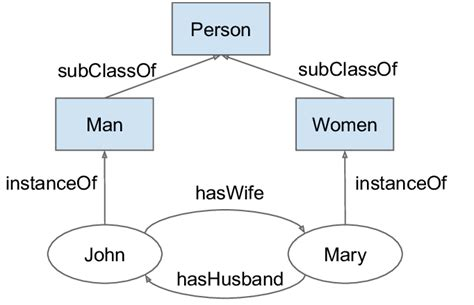
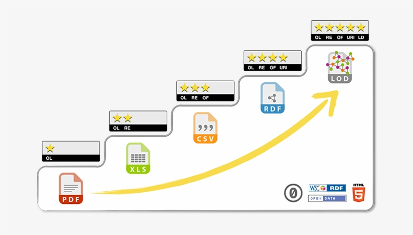

Chapter 4: Storing Information¶

Credit: xkcd
TL;DR: Data can be stored in different ways. Understanding different types of databases and the underlying data models is crucial for both storing and reading data.
Information (retrieval) models vs database models¶
Information models¶
Formal discussions of information might start with the discussion of information models. Wikipedia’s definition reads:
An information model in software engineering is a representation of concepts and the relationships, constraints, rules, and operations to specify data semantics for a chosen domain of discourse. Typically it specifies relations between kinds of things, but may also include relations with individual things. It can provide sharable, stable, and organized structure of information requirements or knowledge for the domain context.
An information model provides formalism to the description of a problem domain without constraining how that description is mapped to an actual implementation in software. There may be many mappings of the information model. Such mappings are called data models (…)
An ontology is an example of an information model being used in Information Science, for instance, this part of a family ontology. As you can immediately see, ontologies are always simplifications and can therefore be debatable:

Information retrieval models¶
Information retrieval then goes a step further and also provides theoretical models for retrieving information, as, for instance, we read in Modern Information Retrieval:
Modeling in IR is a complex process aimed at producing a ranking function, i.e., a function that assigns scores to documents with regard to a given query. This process consists of two main tasks: (a) the conception of a logical framework for representing documents and queries and (b) the definition of a ranking function that computes a rank for each document with regard to a given query.
To build a model, we think first of representations of the documents and of the user information needs. In the case of a document, the representation might be a subset of all terms in the document, which can be generated by removing stopwords (such as articles and prepositions) from the text, for instance. In the case of a query the representation might be a superset of the query terms formed by the original query enriched with synonyms, for instance. Given these representations, we then concieve the framework in which they can be modeled.
Database models¶
However, while such models are obviously very interesting for information science, the discussion is also highly theoretical and requires no small amount of mathematics (set theory, algebra, probability theory, …).
Instead, from our practical perspective it makes more sense to open up the discussion of information, by dealing with database models. Indeed, in most real-world applications of information science, you will most likely have to deal with specific databases that store information and not with the abstract information models that map the data to these databases.
Databases¶
Wikipedia defines a database as a “an organized collection of data, generally stored and accessed electronically from a computer system”. Such a broad definition allows for many different kinds of databases, ranging from a single line of text (e.g. apples,oranges,grapes is a database!) to complex database management systems (DBMS) that operate on large data structures.
The classification of databases is a topic for a course on its own. For now, it will suffice to say that the development of database technology can be divided into three eras based on data model or structure:
navigational
relational
post-relational
Relational¶
Wikipedia:Relational_model and Wikipedia:Database say:
The relational model (…) is an approach to managing data using a structure and language consistent with first-order predicate logic, first described in 1969 by English computer scientist Edgar F. Codd, where all data is represented in terms of tuples, grouped into relations. (…) he described a new system for storing and working with large databases. Instead of records being stored in some sort of linked list of free-form records (…), Codd’s idea was to organise the data as a number of “tables”, each table being used for a different type of entity. Each table would contain a fixed number of columns containing the attributes of the entity. One or more columns of each table were designated as a primary key by which the rows of the table could be uniquely identified; cross-references between tables always used these primary keys, rather than disk addresses, and queries would join tables based on these key relationships, using a set of operations based on the mathematical system of relational calculus (from which the model takes its name). Splitting the data into a set of normalized tables (or relations) aimed to ensure that each “fact” was only stored once, thus simplifying update operations. Virtual tables called views could present the data in different ways for different users, but views could not be directly updated.
The purpose of the relational model is to provide a declarative method for specifying data and queries: users directly state what information the database contains and what information they want from it, and let the database management system software take care of describing data structures for storing the data and retrieval procedures for answering queries.
Most relational databases use the SQL data definition and query language.
Simply said, a relational database is a collection of tables that share a common data element. Have a look at this simplified example of a library catalogue:
Table 1: titles
LOI |
title |
language |
|---|---|---|
c:1 |
The origin of species |
eng |
c:2 |
History of Middle Earth |
eng |
Table 2: authors
LOI |
name |
function |
|---|---|---|
c:1 |
Darwin, Charles |
aut |
c:2 |
Tolkien, J.R.R. |
aut |
c:2 |
Tolkien, Christopher |
edt |
Table 3: subjects
LOI |
subject |
|---|---|
c:1 |
evolutionary biology |
c:1 |
theology |
c:1 |
history of science |
c:2 |
fantasy |
c:2 |
constructed languages |
Now imagine what would happen if we were to convert these three tables to one spreadsheet:
LOI, title, language, name1, name2, function, subject1, subject2, subject3
And imagine scaling this up: books might easily have five authors and ten subjects, and we have only a little bit of metadata here. What about imprints, editions, carries, holdings, and so on? The advantages of relational databases are clear: they are perfect for storing and querying large amounts of related information in a flexible, decoupled way.
Post-relational¶
Wikipedia says:
A NoSQL (originally referring to “non-SQL” or “non-relational”) database provides a mechanism for storage and retrieval of data that is modeled in means other than the tabular relations used in relational databases. Such databases have existed since the late 1960s, but the name “NoSQL” was only coined in the early 21st century (…) NoSQL databases are increasingly used in big data and real-time web applications. NoSQL systems are also sometimes called “not only SQL” to emphasize that they may support SQL-like query languages or sit alongside SQL databases (…).
The data structures used by NoSQL databases (e.g. key–value pair, wide column, graph, or document) are different from those used by default in relational databases, making some operations faster in NoSQL. The particular suitability of a given NoSQL database depends on the problem it must solve. Sometimes the data structures used by NoSQL databases are also viewed as more flexible than relational database tables.
Categories of post-relational databases include:
document stores, such as JSON or XML
triple stores, such as RDF
key-value stores, such as the MUMPS database by YottaDB that we use for Brocade, the University of Antwerp’s Library Management System
The important thing to realize here is that post-relational databases can express things that relational databases cannot, at least not as easily. With post-relational database we leave the concept of tabular data behind, in favour of data as hierarchies (e.g. JSON or XML) or data as graphs (e.g. RDF).
For instance, how would you translate this JSON (postrelational) to a spreadsheet (relational)? Note the asymmetrical position of the key age in particular…
{
"1": {
"name": "Tom Deneire",
"age": "41"
},
"2": {
"name": "Gandalf",
"bio": {
"age": "unknown",
"occupation": "wizard"
}
}
}
Hierarchies¶
JSON¶
In case you are not familiar with JSON, w3schools is a good starting point.
One of the main advantages of JSON is that it is easy to read for humans (easier than XML) and that it can usually be parsed pretty easily by programming languages. For instance, JSON syntax is quite similar to that of Python dictionaries, as the example below shows. However, take care: an array can also be a valid JSON structure!
json_string = '''
{
"name": "Deneire",
"age": 41,
"initials": ["T", "B"]
}
'''
print(json_string)
print(type(json_string))
python_dict = {}
python_dict["name"] = "Deneire"
python_dict["age"] = 41
python_dict["initials"] = ["T", "B"]
print(python_dict)
print(type(python_dict))
{
"name": "Deneire",
"age": 41,
"initials": ["T", "B"]
}
<class 'str'>
{'name': 'Deneire', 'age': 41, 'initials': ['T', 'B']}
<class 'dict'>
In fact, Python allows you to access JSON just like a database, using the json library to either turn JSON into an object (often a dict) with the function loads() or to turn an object into JSON with dumps():
import json
contacts = """
{
"1": {
"lastname": "Doe",
"firstname": "John"
},
"2": {
"lastname": "Doe",
"firstname": "Jane"
}
}
"""
# Turn JSON into dict() with loads()
contacts_dict = json.loads(contacts)
print(contacts_dict["2"]["lastname"])
# Turn dict() into JSON with dumps()
contacts_dict["2"]["lastname"] = "Eyre"
contacts = json.dumps(contacts_dict, indent=4)
print(contacts)
Doe
{
"1": {
"lastname": "Doe",
"firstname": "John"
},
"2": {
"lastname": "Eyre",
"firstname": "Jane"
}
}
XML¶
XML is something most of you are probably familiar with, as it is a recurring technology in digital text analysis. In fact, XML is ubiquitous in the information world. For instance, it is very actively used in the library world. Another example is invoicing; for instance, the Government of Flanders has been asking for XML e-invoices from its suppliers for all contracts since 2017.
XML can be queried with XPath and XQuery, but with Python it is often easier to use one of the available XML libraries which turn XML’s hierarchical structure into a parse tree, which behaves like a Pythonic object that you can iterate over. Two well-known examples are
Here we will briefly discuss reading, parsing (the process of analyzing XML documents to extract their information) and building XML with lxml.
Install lxml¶
Depending on your OS and programming environment, you might first need to install lxml. You can easily verify this by executing import lxml. If the module is not present, Python will throw a ModuleNotFoundError.
For more instructions on this, visit the lxml or Anaconda documentation.
Reading XML¶
import lxml.etree
xml_string = b'''
<database>
<record nr="1">
<name type="last">Deneire</name>
<name type="first">Tom</name>
</record>
<record nr="2">
<name type="last">Doe</name>
<name type="first">John</name>
</record>
</database>
'''
# Turn the XML bytes-string into an `etree` object
tree = lxml.etree.fromstring(xml_string, parser=None)
print(tree)
# Show the methods that this object allows
print(dir(tree))
<Element database at 0x7ff5866211c0>
['__bool__', '__class__', '__contains__', '__copy__', '__deepcopy__', '__delattr__', '__delitem__', '__dir__', '__doc__', '__eq__', '__format__', '__ge__', '__getattribute__', '__getitem__', '__gt__', '__hash__', '__init__', '__init_subclass__', '__iter__', '__le__', '__len__', '__lt__', '__ne__', '__new__', '__reduce__', '__reduce_ex__', '__repr__', '__reversed__', '__setattr__', '__setitem__', '__sizeof__', '__str__', '__subclasshook__', '_init', 'addnext', 'addprevious', 'append', 'attrib', 'base', 'clear', 'cssselect', 'extend', 'find', 'findall', 'findtext', 'get', 'getchildren', 'getiterator', 'getnext', 'getparent', 'getprevious', 'getroottree', 'index', 'insert', 'items', 'iter', 'iterancestors', 'iterchildren', 'iterdescendants', 'iterfind', 'itersiblings', 'itertext', 'keys', 'makeelement', 'nsmap', 'prefix', 'remove', 'replace', 'set', 'sourceline', 'tag', 'tail', 'text', 'values', 'xpath']
Parsing XML¶
# Iterate over the "record" elements
for element in tree.iter("record"):
print(element)
<Element record at 0x7ff58664cb00>
<Element record at 0x7ff58661ffc0>
# Iterate over the "name" elements
for element in tree.iter("name"):
print(element)
<Element name at 0x7ff58660f480>
<Element name at 0x7ff58661f480>
<Element name at 0x7ff586625900>
<Element name at 0x7ff58661ffc0>
# Access the "name" elements
for element in tree.iter("name"):
# XML attributes are dicts
for attribute_name, attribute_value in element.items():
print(attribute_name, ":", attribute_value)
# Get text with .text method of element object
print(element.text)
type : last
Deneire
type : first
Tom
type : last
Doe
type : first
John
Writing XML¶
# Constructing the aforementioned XML string
import lxml.etree
root = lxml.etree.Element("database")
# Create subelements with SubElement(parent, tag, attribute=value)
record1 = lxml.etree.SubElement(root, "record", nr="1")
name1 = lxml.etree.SubElement(record1, "name", type="last")
name1.text = "Deneire"
name2 = lxml.etree.SubElement(record1, "name", type="first")
name2.text = "Tom"
record2 = lxml.etree.SubElement(root, "record", nr="2")
name3 = lxml.etree.SubElement(record2, "name", type="last")
name3.text = "Doe"
name4 = lxml.etree.SubElement(record2, "name", type="first")
name4.text = "John"
print(lxml.etree.tostring(root))
b'<database><record nr="1"><name type="last">Deneire</name><name type="first">Tom</name></record><record nr="2"><name type="last">Doe</name><name type="first">John</name></record></database>'
Graphs¶
RDF¶
Unfortunately, we do not have time to discuss RDF and Linked Data in detail. However, it is important to realize that RDF is a data model, not a data serialization model, such as XML or JSON - in fact, both can be used to express RDF data.
A quick summary from Wikipedia:
The RDF data model is similar to classical conceptual modeling approaches (such as entity–relationship or class diagrams). It is based on the idea of making statements about resources (in particular web resources) in expressions of the form subject–predicate–object, known as triples. The subject denotes the resource, and the predicate denotes traits or aspects of the resource, and expresses a relationship between the subject and the object.
For example, one way to represent the notion “The sky has the color blue” in RDF is as the triple: a subject denoting “the sky”, a predicate denoting “has the color”, and an object denoting “blue”.
RDF is an abstract model with several serialization formats (i.e. file formats), so the particular encoding for resources or triples varies from format to format.
In order to define the data used in RDF we use a Uniform Resource Identifier (URI), a unique and unambiguous identifier for all things described in the triplestore. To illustrate how this works, let’s look at the part of the [Turtle] RDF Q90.ttl for the Wikidata entry Paris, known as entity Q90:
wd:Q90 wdt:P2924 "2320508" ;
wdt:P1082 "+2165423"^^xsd:decimal ;
wdt:P1667 "7008038" ;
wdtn:P1667 <http://vocab.getty.edu/tgn/7008038> ;
wdt:P1151 wd:Q8253667 ;
wdt:P1333 "Point(2.3444967 48.8155755)"^^geo:wktLiteral ;
wdt:P349 "00629026" ;
wdtn:P349 <http://id.ndl.go.jp/auth/ndlna/00629026> ;
wdt:P214 "158822968" ;
wdtn:P214 <http://viaf.org/viaf/158822968> ;
wdt:P1566 "2968815" ;
wdtn:P1566 <http://sws.geonames.org/2968815/> ;
wdt:P227 "4044660-8" ;
wdtn:P227 <https://d-nb.info/gnd/4044660-8> ;
wdt:P1792 wd:Q8964470 ;
wdt:P5905 "4020-56052" ;
wdt:P395 "75" ;
wdt:P3500 "55653" ;
wdt:P2581 "00015540n" ;
wdtn:P2581 <http://babelnet.org/rdf/s00015540n> ;
wdt:P1943 <http://commons.wikimedia.org/wiki/Special:FilePath/Paris%20plan%20jms.png> ;
wdt:P1997 "110774245616525" ;
wdt:P1313 wd:Q12371988 ;
wdt:P3417 "Paris" ;
wdt:P417 wd:Q235863 ;
wdt:P17 wd:Q142 ;
wdt:P3219 "paris" ;
wdt:P486 "D010297" ;
wdtn:P486 <http://id.nlm.nih.gov/mesh/D010297> ;
wdt:P3106 "world/paris" ;
wdt:P982 "dc10c22b-e510-4006-8b7f-fecb4f36436e" ;
wdtn:P982 <http://musicbrainz.org/area/dc10c22b-e510-4006-8b7f-fecb4f36436e> ;
wdt:P1424 wd:Q18220037 ;
wdt:P94 <http://commons.wikimedia.org/wiki/Special:FilePath/Grandes%20Armes%20de%20Paris.svg> ;
wdt:P1376 wd:Q142,
wd:Q16665915 ;
(If you want, you can compare it to the JSON/RDF version)
The last two lines are triples expressing the fact that:
“Paris” (subject)
“is the capital of” (predicate)
“France” (object) and “Grand Paris” (object)
To express this three URIs are used:
Q90(Paris)P1376(property “is capital of”)Q142(France) andQ16665915(Grand Paris, administrative area)
This the statement unique, uniform, unambiguous (telling a computer that Paris the city, not Paris Hilton (Q47899) is the capital of France), and also Linked Data: all elements of the triple are linked up to other data, e.g. Q142 which was the object in this statement, will be the subject of others.
Consider the difference comparing the RDF/XML with a non-RDF version where resources are not identified with URIs and data is not linked and the model not open:
<rdf:Description rdf:about="http://www.wikidata.org/entity/Q90">
<wdt:P1376 rdf:resource="http://www.wikidata.org/entity/Q142"/>
</rdf:Description>
<Description>Paris
<isCapitalof>France</isCapitalof>
</Description>
RDF and especially Linked Open Data are undoubtedly part of the future for information science. If you’re interested to know more or need to work with RDF and Linked Data in practice, I highly recommend reading A Librarian’s Guide to Graphs, Data and the Semantic Web, By James Powell, ISBN 978-1843347538.
Data(bases) as Linked Data¶
The characterization of databases can also be considered not so much from a technical standpoint, but rather as a gradual evolution on the Linked Data scale:
Tim Berners-Lee, the inventor of the Web and initiator of the Linked Data project, suggested a 5 star deployment scheme for Linked Data. The 5 Star Linked Data system is cumulative. Each additional star presumes the data meets the criteria of the previous step(s).
☆ Data is available on the Web, in whatever format.
☆☆ Available as machine-readable structured data, (e.g., not a scanned image).
☆☆☆ Available in a non-proprietary format, (e.g, CSV, not Microsoft Excel).
☆☆☆☆ Published using open standards from the W3C (RDF and SPARQL).
☆☆☆☆☆ All of the above and links to other Linked Open Data.
In this way, we can organize different database types into a data hierarchy like so:

OL: Open License
RE: Readable
OF: Open format
URI: Uniform Resource Identifier
LD: Linked Data
If you want to know more about this, this article offers a good explanation.